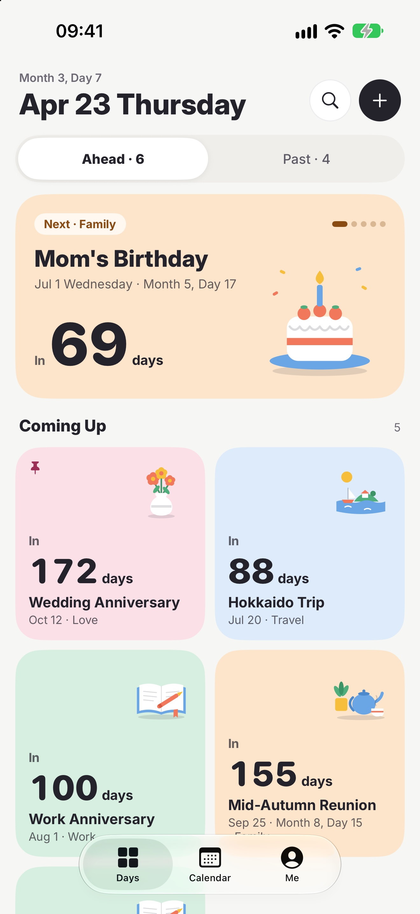
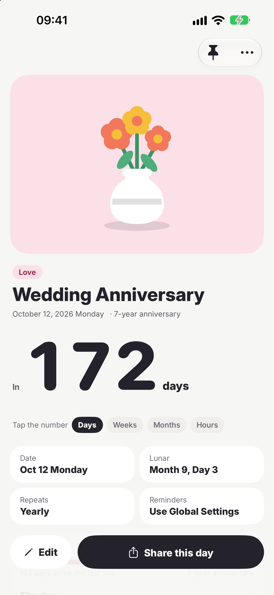
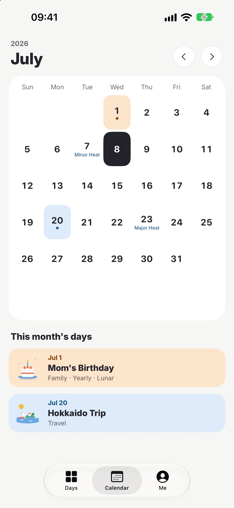
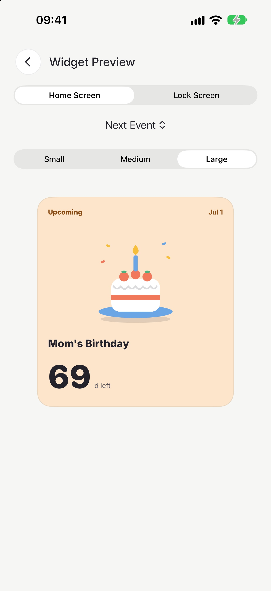
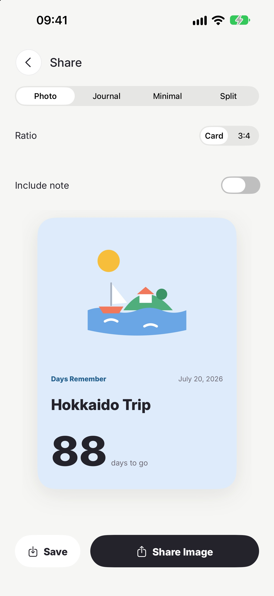
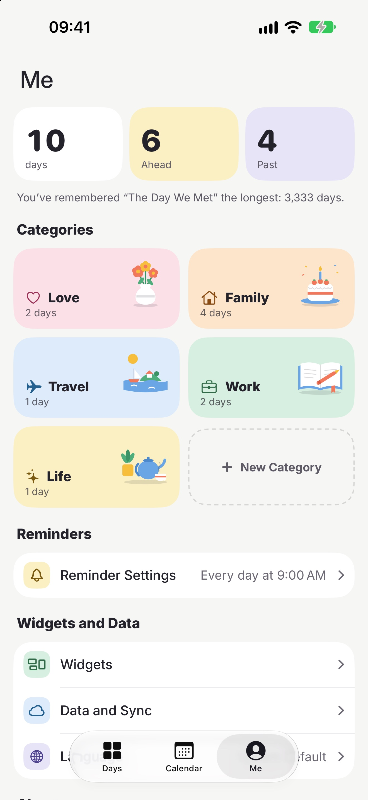
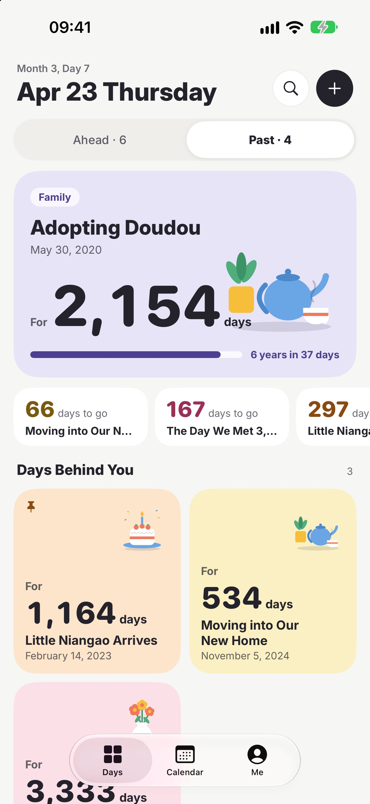

Days RememberGently remember every day that matters
Keep track of a wedding anniversary, a baby’s birth, a trip, an exam countdown. Look forward to what’s ahead, and look back on what has passed.

Try it
How many days until that day?
Enter a day and see how Days Remember counts it.

—
Features
Keep the days that matter on your Home Screen, with gentle reminders
-

Ahead and Past
The Days tab has two sides. Ahead counts down to the days still to come, with the five nearest at the top, and keeps a yearly day there for a week after it passes so you can write it down. One-time days that have gone by move to Past, where they count up day by day.
2views
-

Lunar calendar and solar terms
Repeat a day every year by the Gregorian or the lunar calendar. The calendar shows lunar dates, the 24 solar terms and traditional festivals, with lunar dates from 1900 through 2100.
24solar terms
-

Tap to change units
In a day’s detail, tap the number to switch between days, weeks, months and hours. Below it are the day’s marks: the last and next anniversaries of a yearly day, or the next round number of a past day (every 100 days up to 1,000, every 500 after that, or a whole year).
4units
-

Cover illustrations
Every day is a card in its category’s color. Give it a photo of your own, or pick one of the flat illustrations. A new day starts with a cover that suits its category.
12illustrations
-

Reminders
Get reminded 7, 3 or 1 day ahead, or on the day, at a time you choose. The Daily Greeting and Memories can be turned on separately.
7 · 3 · 1days before
-

Widgets
Small, medium and large on the Home Screen, in the same colored cards as the app, plus three Lock Screen styles. Each widget can show a day of its own.
6styles
-

Share cards
Photo, Journal, Minimal and Split templates, with a 3:4 portrait export. Notes stay off the image unless you include them.
4templates
-

Custom categories
In Me, besides Love, Family, Travel, Work and Life, create categories of your own, each with its own icon and color.
5colors
-

iCloud sync
Days, categories and photos sync across your devices through your own iCloud. A deleted day stays on each of your devices for 30 days, so you can restore it.
30days to restore
Screenshots
On iPhone






0
No data collected
Your days, photos and settings stay on your devices and in your own iCloud. Nothing is sent to the developer.
- No account
- No ads
- No tracking
- No third-party SDKs
Support
Need help?
Choosing a day for a widget, missing reminders, moving to a new iPhone: answers and ways to get in touch are on the support page.